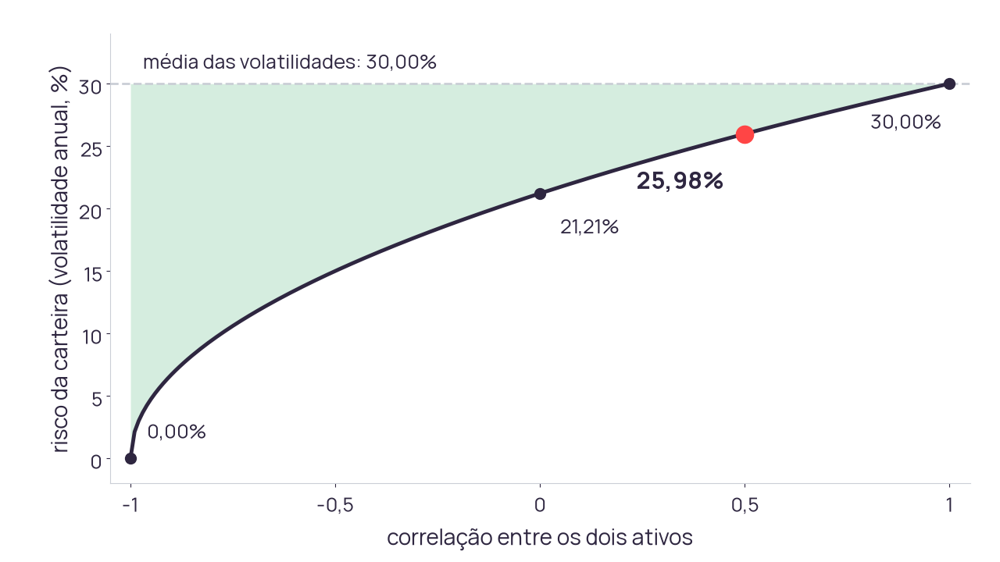
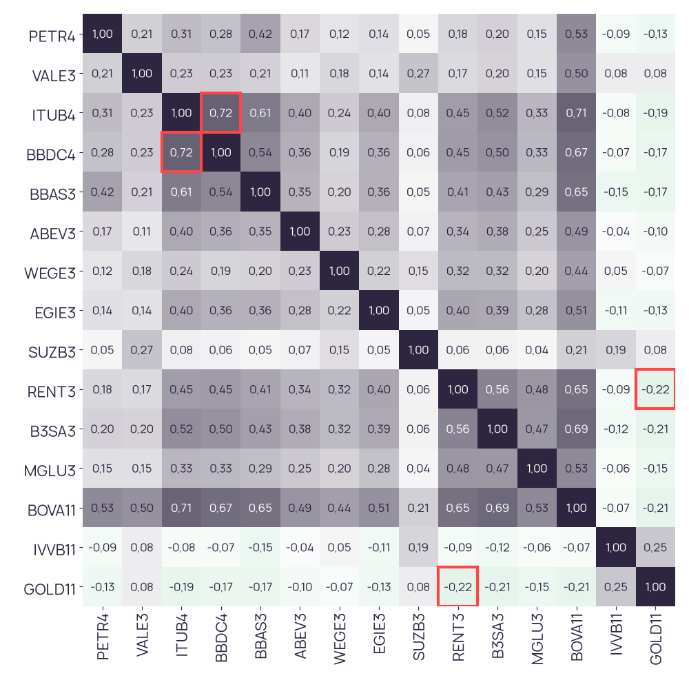
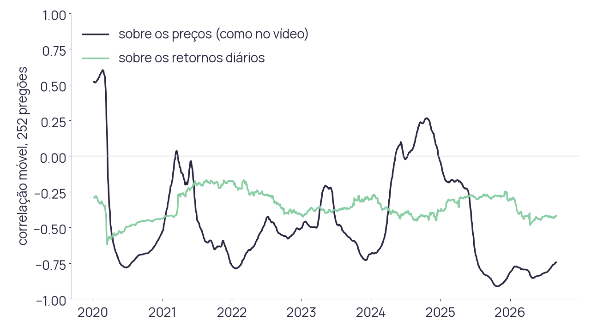

| Horário | Minutos | Bloco | Microexercício no notebook |
|---|---|---|---|
| 14h00 | 15 | Daily dos grupos | |
| 14h15 | 10 | Excel e pandas | M1. A célula vazia do BOVA11 |
| 14h25 | 12 | Funções | M2. A primeira função e M3. Uma função chamada cinco vezes |
| 14h37 | 8 | Gráficos | M4. Heatmap e correlação móvel |
| 14h45 | 10 | Testes | M5. Caça ao bug com testes |
| 14h55 | 5 | Preparação e dúvidas da Ponderada 1 | |
| 15h00 | 60 | Atividade Ponderada 1, individual, até 16h00 |
Os cinco microexercícios da aula (M1 a M5) usam as mesmas operações da Ponderada 1, no notebook aula03.ipynb.
- 1
O que fiz desde a última daily
- 2
O que vou fazer até a review da Sprint 3, em 19/11
- 3
O que está me impedindo
Dois ativos com 30% de volatilidade cada, correlação de 0,5 e metade do dinheiro em cada. A volatilidade da carteira fica:
- abaixo de 30%
- exatamente em 30%
- acima de 30%
Leiam o QR code, entrem com nome e avatar e votem sozinhos, sem conversar. O resultado só aparece depois que a votação fecha.
Dois ativos com 30% de volatilidade cada, correlação de 0,5 e metade do dinheiro em cada. A volatilidade da carteira fica:
- abaixo de 30%
- exatamente em 30%
- acima de 30%
Dois minutos em dupla: defendam o voto com a animação do autoestudo e votem de novo pelo mesmo QR code.
=D1699/D1698-1| A | B | C | D | E | |
|---|---|---|---|---|---|
| 1 | data | PETR4 | VALE3 | BOVA11 | ret. BOVA11 |
| ⋮ | |||||
| 1695 | 20/10/2025 | 27,12 | 56,29 | 141,27 | |
| 1696 | 21/10/2025 | 26,90 | 56,20 | 141,45 | 0,13% |
| 1697 | 22/10/2025 | 27,21 | 57,20 | 141,88 | 0,30% |
| 1698 | 23/10/2025 | 27,52 | 57,09 | 142,68 | 0,56% |
| 1699 | 24/10/2025 | 27,20 | 57,06 | -100,00% | |
| 1700 | 27/10/2025 | 27,34 | 56,99 | 144,00 | #DIV/0! |
| ⋮ | |||||
| 1909 | 31/08/2026 |
PreçosRetornosCorrelaçãoCarteira
=CORREL(Retornos!$C$2:$C$1909;Retornos!E$2:E$1909)105 pares acima da diagonal, uma fórmula CORREL em cada
PreçosRetornosCorrelaçãoCarteira
=CORREL(Retornos!$C$2:$C$1909;Retornos!E$2:E$1909)=CORREL(Retornos!$C$1412:$C$1909;Retornos!E$1412:E$1909)Cada intervalo da aba Retornos, em linhas
210 intervalos para reescrever: 105 fórmulas, dois intervalos em cada
PreçosRetornosCorrelaçãoCarteira
=CORREL(Retornos!$C$2:$C$1909;Retornos!E$2:E$1909)0,23 VALE3 com BBDC4, linhas alinhadas
=CORREL(Retornos!$C$2:$C$1909;Retornos!E$3:E$1910)-0,03 a mesma conta, com a coluna uma linha abaixo
PreçosRetornosCorrelaçãoCarteira
A cesta tem 15 ativos. Quantas fórmulas
CORRELa matriz precisa?Escala. 15 x 14 / 2 = 105 fórmulas, cada uma com dois intervalos de 1.908 linhas.
O que aconteceu na linha 1699? Quem avisaria vocês?
Dado ausente. A fórmula leu a célula vazia como zero: -100,00% na linha 1699 e #DIV/0! na seguinte, sem aviso.
O cliente pede só os últimos 24 meses. O que muda nas fórmulas?
Janela. São 498 linhas, da 1412 à 1909: 210 intervalos para reescrever.
Como saber que nenhuma fórmula foi arrastada com a referência errada?
Conferência. Uma linha de deslocamento muda o 0,23 para -0,03, sem erro e sem aviso.
=CORREL(Retornos!$C$2:$C$1909;Retornos!E$2:E$1909)| A | B | C | D | E | F | |
|---|---|---|---|---|---|---|
| 1 | PETR4 | VALE3 | ITUB4 | BBDC4 | BBAS3 | |
| 2 | PETR4 | 1,00 | 0,21 | 0,31 | 0,28 | 0,42 |
| 3 | VALE3 | 0,21 | 1,00 | 0,23 | 0,23 | 0,21 |
| 4 | ITUB4 | 0,31 | 0,23 | 1,00 | 0,72 | 0,61 |
| 5 | BBDC4 | 0,28 | 0,23 | 0,72 | 1,00 | 0,54 |
| 6 | BBAS3 | 0,42 | 0,21 | 0,61 | 0,54 | 1,00 |
| ⋮ | mais 10 linhas e 10 colunas | |||||
PreçosRetornosCorrelaçãoCarteira
| Limite | Na planilha |
|---|---|
| Escala | 105 fórmulas, cada uma com dois intervalos de 1.908 linhas |
| Dado ausente | célula vazia vira zero, sem aviso |
| Janela | trocar o período é reescrever 210 intervalos |
| Dado novo | colar o CSV e conferir se as linhas continuam alinhadas |
| Conferência | olhar o número; nada reprova uma fórmula errada |
O que precisaria existir para esses cinco limites sumirem?
| Operação | Fórmula na planilha | pandas |
|---|---|---|
| Retorno diário | =D1699/D1698-1, arrastada por 1.908 linhas e 15 colunas | precos.pct_change() |
| Célula vazia | lida como zero | precos.ffill() ou dropna(), escrito no código |
| Volatilidade anual | =DESVPAD.A(E2:E1909)*RAIZ(252), uma por ativo | r.std() * np.sqrt(252), os 15 de uma vez |
| Correlação | =CORREL(...), 105 vezes | r.corr(), a matriz inteira |
| Janela de 24 meses | reescrever os intervalos | r.loc["2024-09-01":"2026-08-31"] |
| Risco da carteira | MATRIZ.MULT e TRANSPOR, refeitas para cada tamanho | np.sqrt(w @ cov @ w) |
| Conferência | olhar o número | assert, que reprova o número errado |
- Baixem o precos_ajustados.csv e abram no Google Sheets (Arquivo > Importar > Fazer upload).
- O BOVA11 está na coluna N. Em Q3, escrevam
=N3/N2-1, arrastem até o fim e desçam até a linha 1699, 24/10/2025. - No notebook, seção M1, completem a linha do jeito da ADR-009 e rodem o
conferir.
Se os preços vierem como texto, troquem a localidade da planilha para Estados Unidos (Arquivo > Configurações): o CSV usa ponto decimal.
=N1699/N1698-1| A | N | Q | |
|---|---|---|---|
| 1 | data | BOVA11 | retorno |
| ⋮ | |||
| 1698 | 2025-10-23 | 142,68 | ? |
| 1699 | 2025-10-24 | ? | |
| 1700 | 2025-10-27 | 144,00 | ? |
Checagem aos 2 min: a linha 1699 está na tela. Debrief: o que a planilha mostra em 24/10 e em 27/10, e qual volatilidade anual ela daria ao BOVA11? Notebook no Colab
1bova = precos_ajustados["BOVA11"] # 24/10/2025: NaN23p = bova.fillna(0) # o que a planilha faz4r_planilha = (p / p.shift(1) - 1).replace(np.inf, np.nan)5r_planilha.std() * np.sqrt(252) # 0.432667r_certo = bova.ffill().pct_change(fill_method=None)8r_certo.std() * np.sqrt(252) # 0.23411def retornos(precos):2 return precos.ffill().pct_change(fill_method=None)34def test_retorno_de_um_pregao_normal():5 r = retornos(pd.Series([100.0, 110.0]))6 assert round(r.iloc[1], 4) == 0.1078def test_lacuna_vale_zero_e_o_dia_seguinte_acumula():9 r = retornos(pd.Series([100.0, None, 110.0]))10 assert r.iloc[1] == 0 and round(r.iloc[2], 4) == 0.101112def test_antes_da_primeira_cotacao_nao_inventa_preco():13 r = retornos(pd.Series([None, 100.0, 110.0]))14 assert pd.isna(r.iloc[1])
peso 0,5 em cada, vol 30%, correlação 0,5
termos dos ativos: 0,0225 + 0,0225
termo cruzado: 0,0225
variância = 0,0675
risco = raiz de 0,0675 = 25,98%Só o termo cruzado depende da correlação. Com correlação 1 o risco é a média das volatilidades, 30,00%. A área sombreada é o risco que a diversificação elimina.
1def risco_dois_ativos(peso, vol_a, vol_b, rho):2 """Volatilidade anual de dois ativos."""3 var = (peso**2 * vol_a**24 + (1 - peso)**2 * vol_b**25 + 2*peso*(1 - peso)*rho*vol_a*vol_b)6 return np.sqrt(var)78risco_dois_ativos(0.5, .3, .3, .5) # 0.2598- Seção M2: escrevam o corpo de
risco_dois_ativossem olhar o slide anterior. - Rodem os três
conferir: o caso de 25,98%, o caso de correlação 1, que devolve a média das volatilidades, e o caso de correlação -1 com risco zero. - Se um deles der AINDA NÃO, descubram qual termo da fórmula está errado mudando um parâmetro por vez.
def risco_dois_ativos(peso, vol_a, vol_b, rho):
"""Volatilidade anual de uma carteira de dois ativos."""
return None # escreva a conta aquiChecagem aos 3 min: o primeiro conferir dá OK. Debrief: com correlação -1, qual peso no ativo de 30% zera o risco quando o outro tem 20%?
- Seção M3: completem
vol_carteira(retornos, pesos)comw, a covariância anualizada enp.sqrt(w @ cov @ w). Oconferirespera 18,82%. - No laço
for, montem a carteira sem cada ativo, com o peso dele dividido entre os outros na proporção dos pesos atuais. - Chamem
vol_carteirapara cada uma e anotem qual retirada mais reduz o risco. - O
std()do pandas usaddof=1, o desvio padrão amostral, que divide por n - 1. Comparem comstd(ddof=0).
def vol_carteira(retornos, pesos):
r = retornos[list(pesos)].dropna()
return None # monte w, a covariância anualizada e devolva a raizChecagem aos 3 min: vol_carteira dá 18,82%. Debrief: qual retirada mais reduz o risco, e por quê? A carteira do notebook é de demonstração e não aparece na prova.
for ativo in carteira:
resto = {k: v for k, v in carteira.items()
if k != ativo}
total = sum(resto.values())
resto = {k: v / total for k, v in resto.items()}
print(ativo, vol_carteira(retornos, resto))| Sem o ativo | Volatilidade anual |
|---|---|
| carteira inteira | 18,82% |
| BBAS3 | 18,83% |
| BBDC4 | 18,37% |
| VALE3 | 20,04% |
| WEGE3 | 19,95% |
| IVVB11 | 21,03% |
Tirar o IVVB11, o menor peso, é a retirada que mais aumenta o risco: ele é o ativo que menos anda junto com os bancos. Este é o item D2 da Ponderada 1, com a sua carteira.

r = precos_ajustados.ffill()
r = r.pct_change(fill_method=None)
matriz = r.dropna().corr()
eixo.imshow(matriz, cmap="PRGn_r",
vmin=-1, vmax=1)105 pares numa figura, nos 1.423 pregões em que os 15 ativos têm retorno (ADR-009). O menor par é RENT3 com GOLD11, -0,22. No Excel seriam 105 fórmulas CORREL. Escrever os valores nas células é o M4.

O vídeo complementar do autoestudo calcula a correlação sobre os preços, que mede se as duas séries têm a mesma tendência no período. Na janela móvel de 252 pregões, a dos preços oscila de -0,91 a 0,60 e a dos retornos diários fica entre -0,62 e -0,17: o dólar tende a subir nos dias em que o BOVA11 cai. Três afirmações da Ponderada 1 dependem dessa diferença.
- Primeira célula: escrevam os valores no heatmap com
eixo.text, como no vídeo. - Segunda célula: calculem
movel_retornoscompct_changee tracem as duas linhas no mesmo eixo. - Calculem o BOVA11 dolarizado e marquem um período em que as duas móveis discordam de sinal.
- Achem o mês do mínimo com
idxmin()e comparem a correlação das duas metades da tabela.
for i in range(len(matriz)):
for j in range(len(matriz)):
eixo.text(j, i, ...) # o valor da célula, com 2 casasChecagem aos 3 min: o heatmap mostra os valores nas células. Debrief: se o cliente pergunta se o dólar protege a carteira de BOVA11, qual das duas linhas responde?
1c = r.dropna().corr() # a matriz do M42assert np.allclose(np.diag(c), 1)3assert np.allclose(c, c.T)4assert np.isclose(sum(carteira.values()), 1)5assert round(risco_dois_ativos(.5, .3, .3, .5), 4) == .25986assert vol_carteira(retornos, carteira) <= media_ponderada- Seção M5: três funções dizem calcular a volatilidade anual da PETR4, e duas têm defeito.
- Escrevam dois
assert: a anual dividida pela diária énp.sqrt(252), e o resultado fica entre 10% e 100%. - Rodem o laço e anotem quais funções reprovam e qual teste pegou cada uma.
for funcao in (vol_a, vol_b, vol_c):
v = funcao(petr4)
try:
assert ... # anual / diária == sqrt(252)
assert ... # entre 10% e 100%
print(funcao.__name__, "passou")
except AssertionError:
print(funcao.__name__, "REPROVADA")Checagem aos 3 min: o primeiro assert está escrito e reprova alguma função. Debrief: qual das duas funções com defeito passaria despercebida numa planilha?
| Função | Conta | PETR4, série inteira | Anual / diária = √252 | Entre 10% e 100% |
|---|---|---|---|---|
vol_a | r.std() * np.sqrt(252) | 39,25% | passa | passa |
vol_b | r.std() * np.sqrt(365) | 47,24% | reprova | passa |
vol_c | r.std() * 252 | 623,12% | reprova | reprova |
O 47,24% parece plausível e passaria numa planilha. Só a propriedade da anualização pega o erro. Na Ponderada 1, a última célula, entregar(), faz o mesmo com as suas respostas: avisa item em branco, par mal escrito, troca impossível e parecer fora do tamanho.
| Na prova você vai | Onde treinou |
|---|---|
Montar os retornos com ffill().pct_change(fill_method=None) e recortar a sua janela | M1 e Aula 02 |
Calcular a volatilidade da carteira com np.sqrt(w @ cov @ w) | M3 |
| Achar o par de maior e o de menor correlação, e testar cinco retiradas num laço | M3 e M4 |
Montar a tabela do vídeo com pd.concat e dropna, e a correlação móvel de 252 pregões | M4 e autoestudo [3] |
| Comparar correlação de preços e de retornos, e o BOVA11 dolarizado | slide 18 e vídeo [3] |
| Testar trocas de ativo e escolher a que mais reduz o risco | M3, com outro laço |
Fazer o heatmap da carteira e o gráfico da móvel, e ler o mês do mínimo com idxmin() | M4 |
Dizer o que fazem pct_change, rolling, concat, dropna, ffill, @ e seus argumentos | M1 a M5 |
Vale consultar os notebooks e materiais das aulas e o vídeo do autoestudo. Não vale conversar com colegas. Formato das respostas: fração com 4 casas (0.2345), par como "ITUB4-BBDC4", afirmação como "V" ou "F".
- 1No GitLab, abra o repositório
t19/ponderadae baixe o arquivoponderada1_seu-nome.ipynb. O seu RA já está dentro. - 2No Colab, Arquivo > Fazer upload de notebook. Rode as células 1 e 2 sem mudar o RA.
- 3Resolva as Partes A a E. Rode as células dos gráficos: eles só contam se aparecerem no arquivo.
- 4Preencha
RESPOSTASe escreva oPARECER, de 80 a 200 palavras. - 5Rode
entregar()e corrija o que ela apontar. - 6Arquivo > Baixar o .ipynb e suba no GitLab com o mesmo nome, no mesmo lugar.
| Parte | O que avalia | Pontos |
|---|---|---|
| A. Cálculos e gráficos | volatilidade da carteira, correlação com o dólar, BOVA11 dolarizado, heatmap e correlação móvel | 0,75 |
| B. Diagnóstico | par que concentra, retirada que mais reduz o risco, par que diversifica, leitura do gráfico | 0,75 |
| C. Afirmações | quatro afirmações de um assessor, V ou F, mais o parecer de diagnóstico e contexto | 0,40 + 0,30 |
| D. Recomendação | uma troca de ativo, comparada com a melhor possível, mais o parecer | 0,30 + 0,20 |
| E. Funções do Python | três perguntas sobre o que uma função faz e o papel dos argumentos | 0,30 |
- Abram agora o repositório da ponderada no GitLab e confiram que o arquivo com o seu nome está lá.
- Façam o upload no Colab e rodem as células 1 e 2: a carteira, a janela e as quatro afirmações devem aparecer.
- Dúvidas sobre o enunciado agora; durante a prova, só dúvidas de acesso.
Checagem aos 3 min: todos com a carteira e a janela na tela. Debrief: dúvidas de enunciado respondidas para a sala inteira.
- 1
Prova individual, até 16h00
- 2
Rode
entregar()antes de baixar o notebook - 3
Suba no GitLab com o mesmo nome de arquivo
- ADR-009: tratamento de ausência único do módulo, com janela comum.
- BODIE, Z.; KANE, A.; MARCUS, A. Fundamentos de investimentos. 9. ed. AMGH, 2014. Diversificação eficiente. Autoestudo da semana 5.
- CÓDIGO QUANT. Calculando correlação entre dólar e Ibovespa (12min27). Complemento do autoestudo da semana 5.
- Atividade Ponderada 1: Diagnóstico de uma carteira herdada, 3 pontos. Adalove da turma 2026-2B-T19.